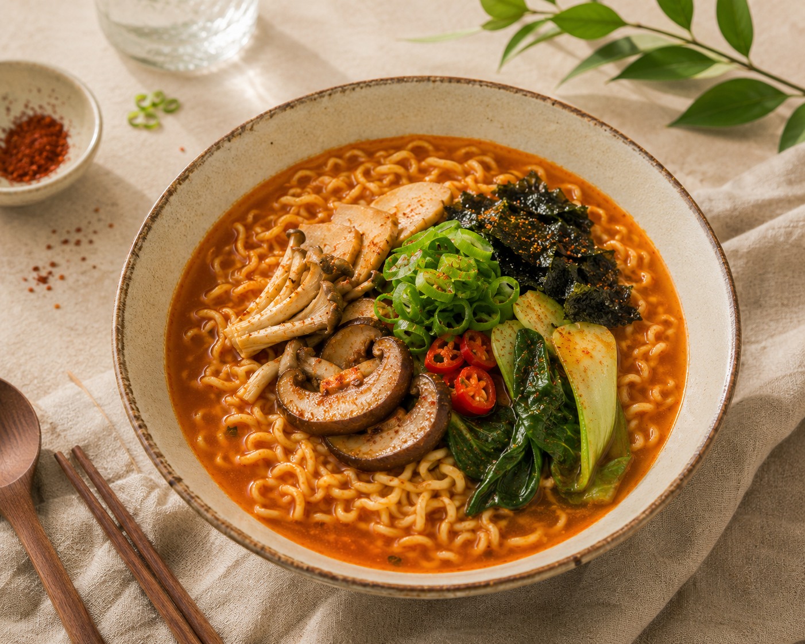
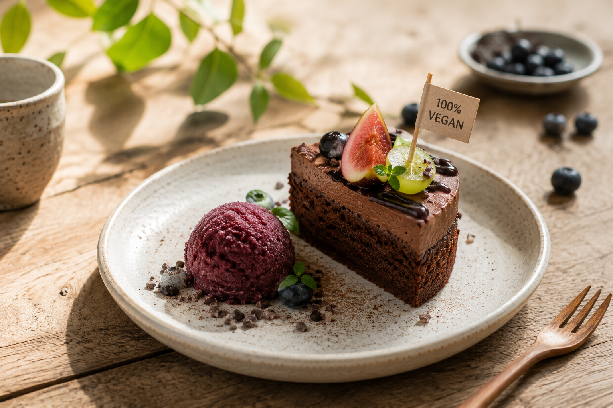
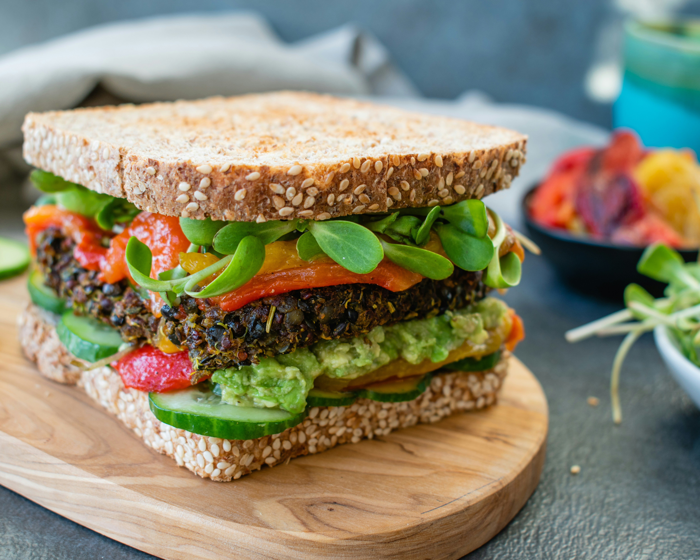
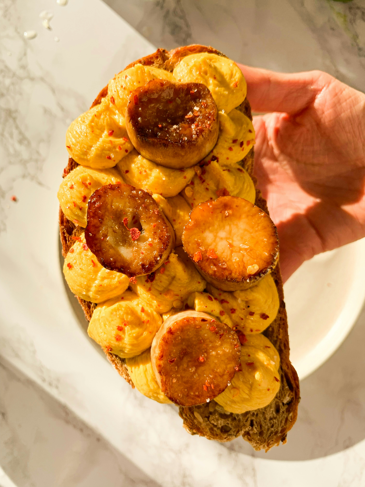
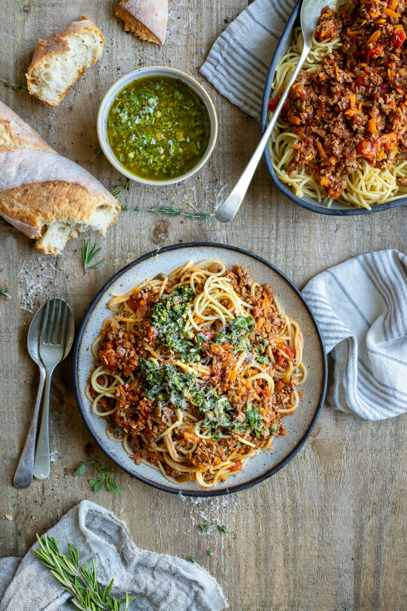
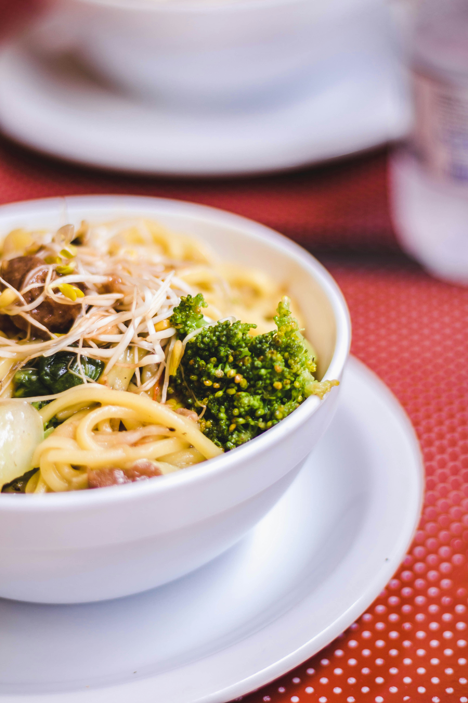

오늘의 비건 PICK
제주비건 팀이 오늘 직접 고른 비건 메뉴 추천,
매일 새로운 맛집과 메뉴를 소개합니다.
오늘의 추천맛집 & 메뉴
-

Five Seventh
비건 플레이트, 버거, 김치떡볶이를 즐길 수 있는 구좌읍 감성 비건 맛집
11:00 - 19:00 구좌읍 -

And 유 카페
계란과 우유없이 만든 달콤한 디저트
09:00 - 17:00 애월읍 -

푸더매 제주
신선한 채소와 비건 패티를 듬뿍 담은 건강한 비건 샌드위치
09:00 - 19:00 구좌읍 -

오캄
달콤한 무화과와 식물성 크림이 어우러진 제주 감성 디저트
11:00 - 19:00 제주시 -

제주901
다양한 채소와 담백한 육수로 완성한 건강한 비건 누들
09:00 - 16:00 제주시 -

숲속의 도토리
건강한 도토리 요리를 선보이는 15년 전통의 도민 맛집
11:00 - 20:00 제주시 -
푸른솔 맑은향
건강한 도토리 요리를 선보이는 15년 전통의 도민 맛집
11:00 - 20:00 제주시 -
밥이보약
건강한 도토리 요리를 선보이는 15년 전통의 도민 맛집
11:00 - 20:00 제주시 -
라지마할
건강한 도토리 요리를 선보이는 15년 전통의 도민 맛집
11:00 - 20:00 제주시 -
다담
건강한 도토리 요리를 선보이는 15년 전통의 도민 맛집
11:00 - 20:00 제주시 -
국수천하
건강한 도토리 요리를 선보이는 15년 전통의 도민 맛집
11:00 - 20:00 제주시 -
팟타이시암
건강한 도토리 요리를 선보이는 15년 전통의 도민 맛집
11:00 - 20:00 제주시